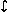
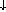

S, Y S].
S, Y S].
The graphical presentation of symmetric premonoidal categories uses extra control arcs to model control dependencies. This can be seen as a simple form of state transformer where each graph has one extra incoming arc and one extra outgoing arc.
Given a strict symmetric monoidal category C with a chosen object S, the state transformer category of C, State(C) is given by:
S, Y S].
 State(C)
maps f
to f idS.
State(C)
maps f
to f idS.
C
State(C)
is a strict symmetric premonoidal category with premonoidal structure given by:
 g is
f
g.
g is
f
g.
 g is
(id
symm) ;
(f
g) ;
(id
symm).
g is
(id
symm) ;
(f
g) ;
(id
symm).
P
we can find a strict symmetric monoidal category
D
such that:
| C | |
P |
 |
|
|
| D | |
State(D) |
that is
C
P
is a full sub-strict-symmetric-premonoidal-category of
D
State(D).
The rest of this section shows how to construct D, and show that it has the required properties.
Let LGraph( C)
be the subcategory of Graph(
C)
be the subcategory of Graph( V,C)
category of linear flow graphs, that is ones where:
V,C)
category of linear flow graphs, that is ones where:
C.
C.
Similarly, let LGraph(C, P)
be the subcategory of Graph(V,C,P)
where:
P)
be the subcategory of Graph(V,C,P)
where:
C or P.
P
with centre
LGraph(C).
Given two signatures
C and
P with the same sorts,
define Mix(C,P)
to be the signature with:
C plus a new
sort S.
C and those of
P.
 Y
in Mix(C,P)
whenever c : X Y
in C.
Y
in Mix(C,P)
whenever c : X Y
in C.
YS
in Mix(C,P)
whenever c : X Y
in P.
| LGraph(C) |
|
LGraph(C,P) |
|
|
|
| LGraph(Mix(C,P)) |
|
State(LGraph(Mix(C,P))) |
where the full subcategories are taken by only including objects which do not include the new sort S.
We can regard a monoidal category C as a signature with:
Y1,...,Yn
are morphisms f : X1...Xm
Y1...Yn.
| [[_]]C : | LGraph(C) |  |
C |
| [[_]]P : | LGraph(C,P) | |
P |
such that:
Q
as a pushout in the category of strict symmetric premonoidal categories:
| [[_]]C : | LGraph(C) | |
C |
|  |  | ||
| [[_]]D : | LGraph(Mix(C,P)) | |
D |
| [[_]]P : | LGraph(C,P) | |
P |
| [[_]]Q : | State(LGraph(Mix(C,P))) | |
Q |
Proposition (Full sub-strict-symmetric-premonoidal-category).
C
P
is a full sub-strict-symmetric-premonoidal category of
D
Q.

P
we can find an strict symmetric monoidal category
D such that:
| C | |
P |
|
|
|
| D | |
State(D) |